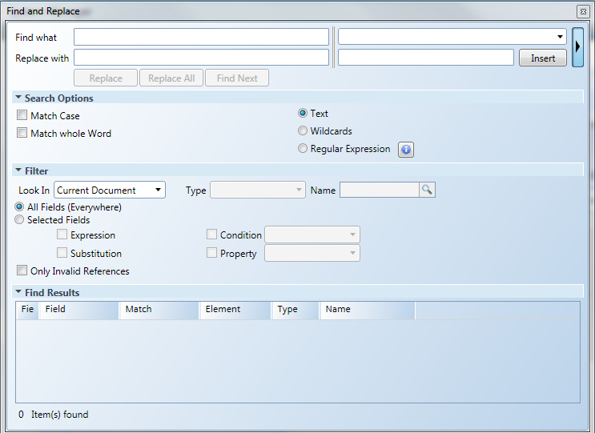
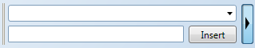

Find and Replace View


NOTE:
The Find and Replace view is not part of the dock panel and is therefore not dockable. The Find and Replace window is either open or closed.
Find and Replace View | |
Field | Description |
Find what | Type the text, string, or data you want to search for. |
Replace with | Type the text, string, or data you want to replace to replace what is in the Find what field. |
Expand to display the Property Toolbox fields when selected. Allows you to insert specific property values for non-textual properties, such as brush type, color, enumerations, etc. 
Collapses the Property Toolbox fields. | |
Replace | If nothing is selected in the Find Result pane, the first item is replaced and a Find Next is performed. If one or more items are selected in the Find Result pane, all selected items are replaced and then a Find Next is performed. |
Replace All | Replace all instances of the search criteria listed in the Find Results section. |
Find Next | Find the next instance of the search criteria listed in the Find Results section and bring it into view. |
Search Options Section Allows you to specify your search options for the Find What field. Select from the options listed below: | |
Match Case | Conduct a case-sensitive search based on the text entered. |
Match whole word | Conduct a search based on finding the entire text string as entered in the Find what field. NOTE: If the Regular Expression feature is selected for the search, this feature is bypassed. |
Text | Conduct a text search without any wildcards. This is the default setting for the Find and Replace view. |
Wildcards | Conduct a search using the following wildcards.
|
Regular Expression | Recognizes your search to find regular expressions. For information on regular expressions, click Expression Help. NOTE: When this option is selected, the Match Whole Word option is grayed out and inactive. |
Filter Section | |
Look In | Select where the search will take place: the CurrentDocument or active graphic, All Open Documents, or the Entire Project. |
Type | Select a field type to further filter your search. NOTE: This is disabled if you have chosen to look in the Current Document. |
Name | Enter a graphic, symbol, or template graphic name to further filter your search. The filter conducts the search based on text or a name entered. If the field is left blank, all “documents” are found and displayed in the Find Results window. NOTE: This is disabled if you have chosen to look in the Current Document. |
All Fields (Everywhere) | Search all fields, including expressions, substitutions, conditions, and properties. |
Selected Fields | Select a field type to further filter your search.
|
Only Invalid References | Search for incorrect syntactical usage for data point references found in all project:
|
Find Results Section Displays the Find what results. | |
The Refresh Results icon displays when a search or a replace is selected on the Entire Project from the Look In section. The icon allows you to restart a search. While the search is being refreshed, a status bar displays showing you the progress of the refresh. For larger projects, the refresh can take a few minutes. The Cancel NOTE: When you cancel a Replace All operation in the Entire Project, any replacements made, will not be rolled back. | |
For item found, the following columns information displays: | |
Field Type | Displays the items field type: Expression, Substitution, Condition, or Property. |
Field | Display the name of the item, depending on the field type:
|
Match | Display the entire string of the field and highlights the matching pattern. NOTE: Only the highlighted string will be replaced by the Replace function. |
Element | Display the element name and description, along with additional element properties such as their position and size. Example: If the element is a child of a Symbol instance, then the full path of the Symbol instance is prefixed. Example: |
Type | Display the document type. |
Name | Display the documents name. |
 icon allows you to cancel the refresh process.
icon allows you to cancel the refresh process.Related Topics
For background information, see Find and Replace.
For related procedures, see Working with Find and Replace.